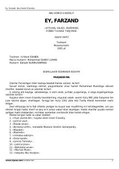

EFImom G'azzoliyning islomiy axloq va ibodatlar haqidagi mashhur asari o'zbek tilida.
Bu asar buyuk islom mutafakkiri Imom G'azzoliyning 'Ayyuhal valad' asarining o'zbek tilidagi tarjimasidir. Kitobda namoz, tahorat, masjid odobi, ziyorat va kundalik hayotdagi islomiy xulq-atvor qoidalari hadislar asosida bayon etilgan. Asar 369 hadisi sharif va 44 avliyo xabari bilan boyitilgan bo'lib, 2005 yilda Toshkentda qayta nashr etilgan.